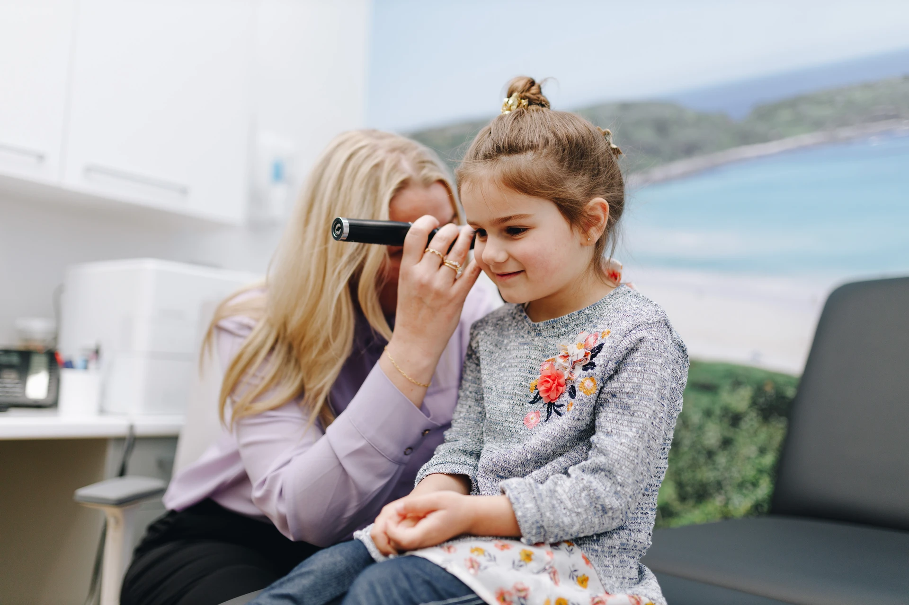
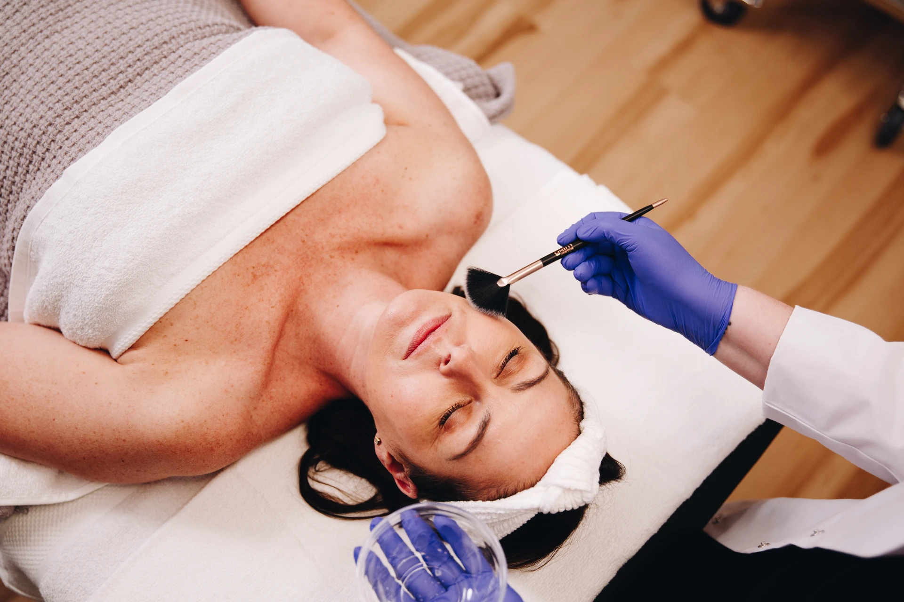
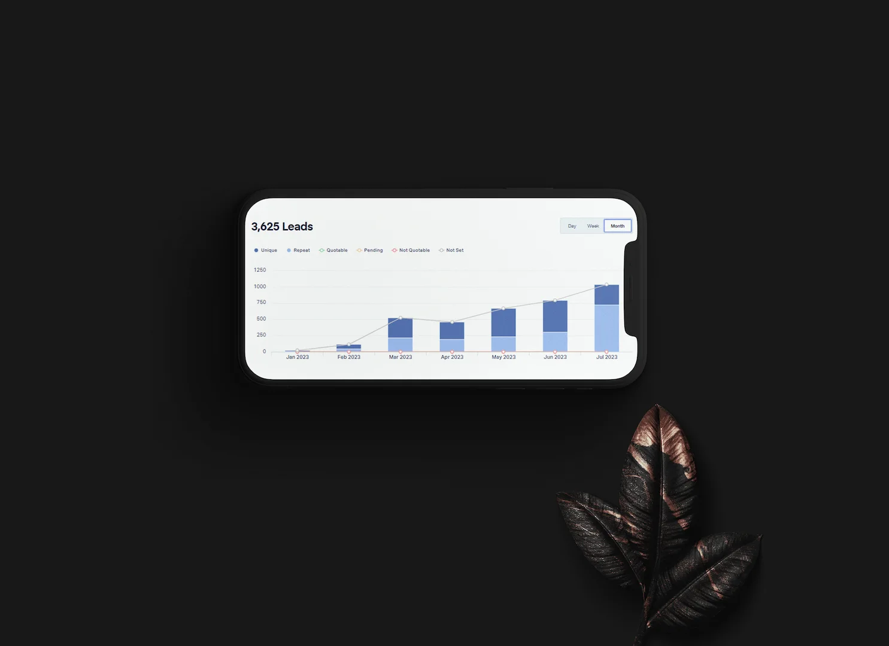
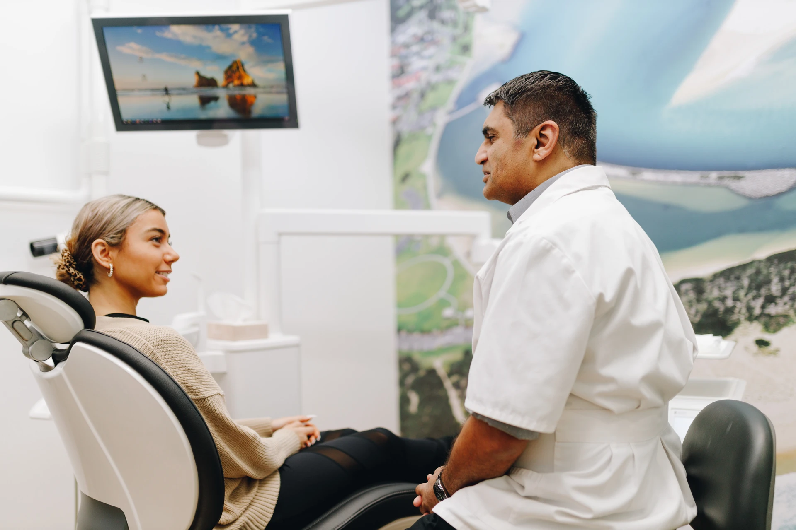
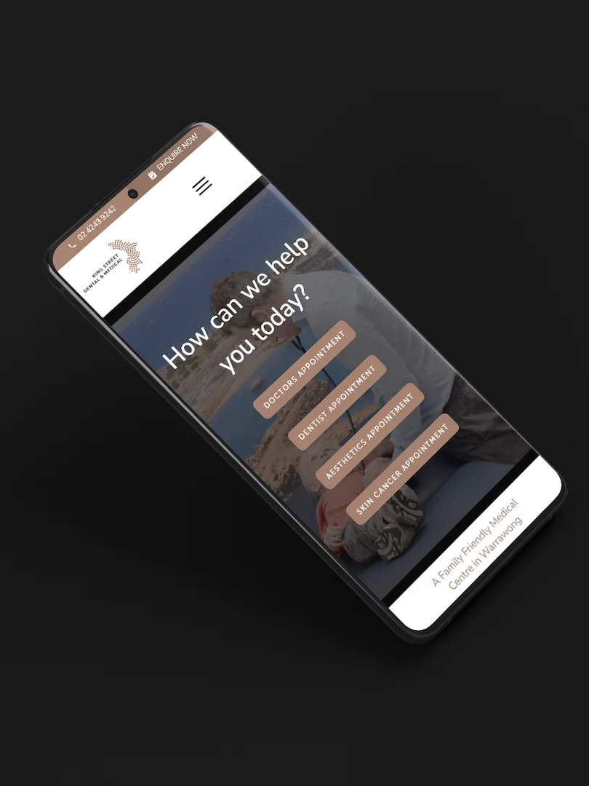

Case Study — Healthcare
King Street Dental & Medical.
A marketing strategy to grow a multi-service healthcare group — from fewer than 1,000 patients a year to more than 65,000.

01 / The brief
Clinical care that was excellent, but invisible to the patients looking for it.
King Street came to Adcraft seeing fewer than 1,000 patients a year. The objective was clear: be findable, be trusted, and make booking effortless.
A great practice is only as visible as the system that carries it to patients.
02 / What we did
One connected system, not five separate tactics.
We rebuilt the website around how patients actually choose a healthcare provider, then aligned everything else to it.
Strategy-led website
Rebuilt around how patients decide, with the booking flow shaped to turn a visitor into an enquiry.
SEO & service pages
Pages mapped to the conditions and treatments patients search for — compounding year on year.
Compliance language
Every line written inside AHPRA's advertising guidelines, without flattening the practice's voice.
Booking flow & email
A short booking path embedded in the site, supported by email marketing — all one system.
03 / The work
A look at what we built.
Website, service pages, brand and campaign work — designed to grow bookings inside the guidelines.





04 / The result
From under 1,000 to more than 65,000 a year.
The compounding started around month four — and has not stopped since.
Next project
WD Imaging Group ↗Where to go from here
Could your practice be the next case study?
A call with Ryan is a fifteen-minute conversation — no obligation, no preparation needed. We will tell you honestly whether Adcraft is the right fit.
Book a call with Ryan ↗